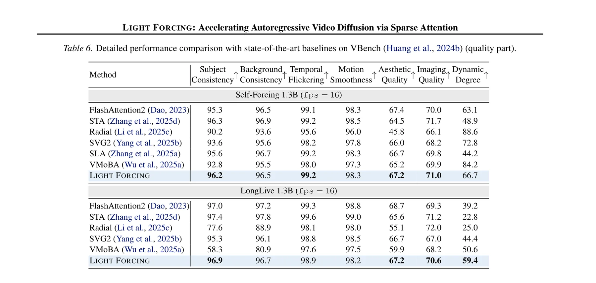
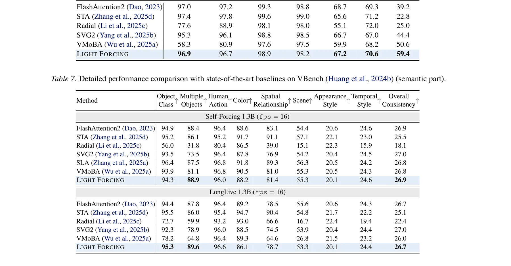
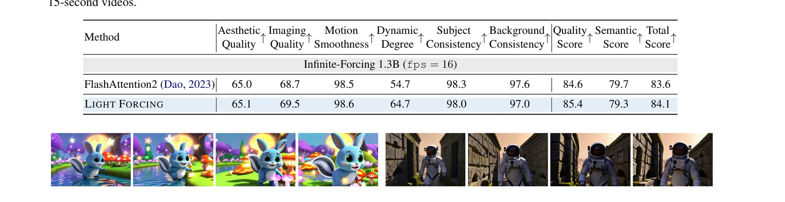
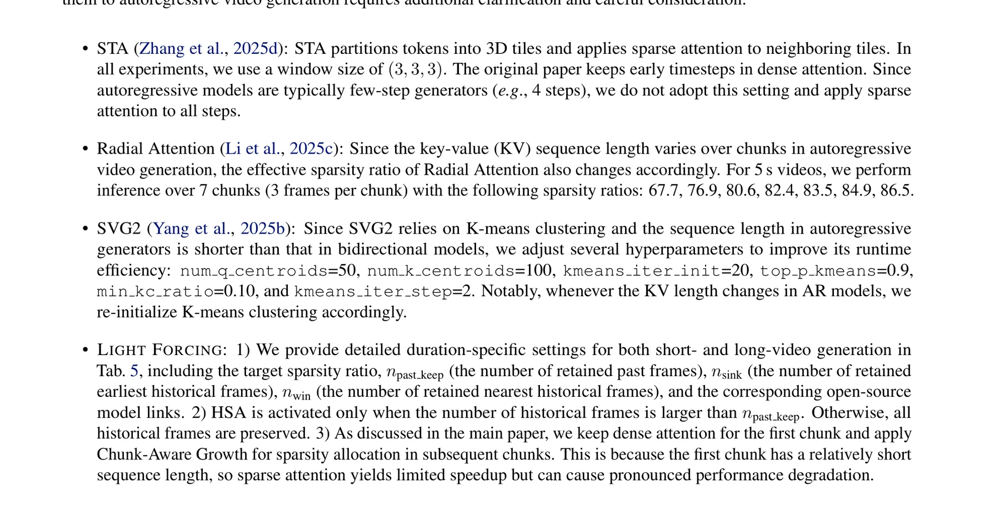

一、研究背景：注意力成为实时生成的瓶颈
自回归视频扩散模型通过逐帧（或逐chunk）生成实现了流式视频合成，但注意力机制的二次计算复杂度始终是实时部署的核心瓶颈。实验数据显示，在Self Forcing 1.3B模型上生成480P视频时，注意力计算在最后一个chunk消耗的时间约是其他组件（线性层、RoPE等）总和的3.1倍。
现有的稀疏注意力方案（如STA、Radial、VMoBA等）主要面向双向视频扩散模型设计。直接将这些方案应用于自回归模型会导致严重的性能退化，原因有二：
问题1: chunk隔离导致误差累积。自回归模型中，不同chunk对全局误差累积的贡献是异质的。早期chunk的稀疏化误差会被后续chunk继承并放大，最终导致过饱和等不可逆的质量退化。
问题2: 历史上下文利用不足。滑动窗口注意力或chunk sink方案不可避免地丢弃了部分历史信息。然而，对于每个query block来说，关键的历史信息在不同层、不同头、不同去噪时间步之间差异巨大。
在双向扩散模型中，所有帧在同一pass中被处理，稀疏注意力的误差是"对称的"——每个帧对其他帧的影响程度相同。但在自回归模型中，误差传播是单向且累积的：第1个chunk的误差会"注入"到后续所有chunk的条件中，形成类似马尔可夫链的误差传播。这意味着传统的"chunk无关"稀疏策略（如均匀稀疏率）在AR模型中必然失效，必须设计考虑chunk因果顺序的差异化稀疏策略。
二、核心动机：Toy实验的启示
研究者通过精巧的玩具实验直观展示了稀疏注意力在AR模型中的行为。
第一个chunk在自回归链中扮演的角色类似于语言模型中的"前缀token"——它为整个生成过程设定了视觉基底（色彩空间、纹理分布、场景结构）。从条件概率的角度，$p(x_1)$ 是唯一不依赖任何先前帧的分布，其质量直接决定了后续所有条件概率 $p(x_i|x_{\lt i})$ 的质量上界。对第一个chunk施加稀疏化相当于在联合分布的根部引入噪声，这种噪声会沿着因果链逐级放大，最终导致不可逆的质量退化。
基于这些观察，Light Forcing提出了两个互补的组件：Chunk-Aware Growth (CAG) 用于chunk级的稀疏率分配，Hierarchical Sparse Attention (HSA) 用于token级的稀疏模式选择。
三、Chunk-Aware Growth: 理论驱动的稀疏率分配
3.1 稀疏诱导误差的理论分析
CAG的核心洞察是将稀疏化对每个chunk的影响建模为噪声水平的等效变化。在概率流ODE框架下，去噪过程可以理解为从噪声状态逐步恢复到干净数据的过程。
其中 $G_\theta(x_i^{t_j}, t_j, x_{\lt i}, c)$ 对应去噪估计 $\hat{x}_i^0$，$\Psi(\cdot)$ 为前向重加噪映射。
稀疏诱导的误差可以用变分距离来刻画：
第一项为有限步采样误差 $\propto 1/\sqrt{T}$，与去噪步数有关；第二项为分数估计误差 $\epsilon_{\text{score}}$，反映模型学习的近似误差。稀疏化主要影响第二项——通过引入近似计算误差来降低分数估计精度。由于早期chunk的分数估计误差会通过自回归链累积到后续chunk，因此越早的chunk需要越低的稀疏率。
3.2 稀疏率分配公式
CAG的稀疏率分配公式为：
其中 $\alpha_i$ 为第 $i$ 个chunk的噪声水平（$\propto 1/\sqrt{T}$），$s_{\text{base}}$ 为基准稀疏率，$\beta$ 为调制因子。$\beta$ 通过等式约束求解——使调制后的总FLOPs等于目标稀疏率对应的FLOPs：
CAG的公式看似简单，但其背后蕴含着严格的理论基础：稀疏诱导误差的两个来源（有限步采样误差和分数估计误差）分别对应了时间依赖和模型依赖两个维度。CAG通过噪声水平 $\alpha_i$ 自动编码了chunk在自回归链中的位置信息，使得稀疏率分配完全由理论驱动而非经验调参。这种"理论到实践"的闭环设计是该方法的核心竞争力。
四、Hierarchical Sparse Attention: 粗到细的双级选择
CAG在宏观层面确定了每个chunk的稀疏率，而HSA则在微观层面决定每个query block应该关注哪些历史帧和哪些token块。
4.1 Token压缩
其中 $\phi(x, b)$ 为均值池化操作，将序列维度聚合为大小为 $b$ 的块。压缩后的表示用于后续的稀疏模式选择，而非直接参与注意力计算。
4.2 双级掩码选择
HSA的两级选择将稀疏注意力的额外开销控制在极低水平：帧级选择的计算量为 $O(n_q \times m)$（$m$ 为候选帧数，远小于总帧数），块级选择的计算量为 $O(n_q \times |T_r| \times \lceil n/b_{kv} \rceil)$。两者之和远小于直接计算全部注意力的 $O(n^2)$。论文报告帧级检索仅增加约2%的端到端运行时间，却能显著提升长程一致性。这种"低成本高收益"的设计是HSA的核心优势。
最终的块级稀疏注意力计算为：
# Hierarchical Sparse Attention: 双级掩码选择的伪代码实现
# 可信度说明: 基于论文Section 4.2的公式(7)-(13)重构
import torch
import torch.nn.functional as F
def hierarchical_sparse_attention(q, k, v, config):
"""
q: [B, F, N, D] - 当前chunk的query (F帧, N tokens/frame)
k, v: [B, I*F, N, D] - 所有历史帧的key/value
config: 含b_q, b_kv, top_k_frame, top_k_block等配置
"""
B, F_q, N, D = q.shape
I = k.shape[1] // F_q # 历史chunk数量
# Stage 1: Token Compression
q_blk = F.avg_pool1d(q.flatten(0,2).transpose(1,2),
kernel_size=config.b_q) # blockwise compress query
k_blk = F.avg_pool1d(k.flatten(0,2).transpose(1,2),
kernel_size=config.b_kv) # blockwise compress key
# Framewise compress keys for frame-level selection
k_frame = F.avg_pool1d(k_blk, kernel_size=N // config.b_kv)
# Stage 2: Frame-level Selection
# Compute frame relevance scores
frame_scores = torch.bmm(q_blk, k_frame.transpose(1,2)) # [B*F*q_blocks, m]
# Select top-k frames + always-selected frames
top_k_frames = torch.topk(frame_scores, config.top_k_frame, dim=-1).indices
always_selected = get_sink_and_window_frames(I, F_q, config)
selected_frames = torch.cat([top_k_frames, always_selected], dim=-1)
# Stage 3: Block-level Selection within selected frames
k_selected = k_blk[:, selected_frames] # Extract selected frame blocks
block_scores = torch.bmm(q_blk, k_selected.transpose(1,2))
top_k_blocks = torch.topk(block_scores, config.top_k_block, dim=-1).indices
# Stage 4: Blockwise Sparse Attention
mask = construct_block_mask(top_k_blocks, q_blk.shape, k_selected.shape)
attn_output = block_sparse_attention(q, k[:, selected_frames],
v[:, selected_frames], mask)
return attn_output五、实验验证：Light Forcing的全面性能
5.1 主要结果

Light Forcing在Self Forcing上取得了84.5的VBench总分，不仅超越了所有稀疏注意力基线，甚至高于密集FlashAttention基线的84.1分。这一结果表明，精心设计的稀疏注意力可以超越密集注意力——密集注意力中存在显著的冗余。
| 方法 | 延迟(s) | 加速比 | Aesthetic | Imaging | Motion | Subject | Total |
|---|---|---|---|---|---|---|---|
| FlashAttention (dense) | 9.61 | 1.00x | 67.4 | 70.0 | 98.3 | 95.3 | 84.1 |
| STA | 8.27 | 1.16x | 64.5 | 71.7 | 98.5 | 96.3 | 83.6 |
| Radial | 7.39 | 1.30x | 45.8 | 66.1 | 96.0 | 90.2 | 73.7 |
| SVG2 | 21.38 | 0.45x | 66.0 | 68.2 | 97.8 | 93.6 | 82.8 |
| VMoBA | 7.42 | 1.29x | 65.2 | 69.9 | 97.3 | 92.8 | 83.6 |
| SLA | 7.71 | 1.25x | 66.7 | 69.8 | 98.3 | 95.6 | 83.2 |
| Light Forcing | 7.39 | 1.30x | 67.2 | 71.0 | 98.3 | 96.2 | 84.5 |
Light Forcing的Total Score (84.5)超越了密集FlashAttention (84.1)，这看似违反直觉。但深层原因是：密集注意力中的注意力分布并非完全均匀——很多位置的注意力权重接近于零，对最终结果贡献甚微。HSA通过显式地聚焦于信息量最大的token，实际上起到了一种隐式正则化的作用，减少了注意力噪声对生成质量的干扰。这类似于Dropout在训练中的正则化效果，但这里是通过注意力稀疏化在推理阶段实现的。
5.2 整合其他加速技术

Light Forcing本身提供1.2-1.3x的注意力加速，但与FP8量化、内核融合、LightVAE组合后，端到端加速达到2.0-3.0x。这揭示了一个重要的工程洞察：稀疏注意力与其他加速技术在不同计算维度上正交——稀疏注意力减少注意力FLOPs，FP8减少线性层FLOPs，内核融合减少内存带宽瓶颈，LightVAE减少解码开销。这种正交性使得组合后的加速近似乘法叠加。
5.3 定性结果

5.4 超参数敏感性

# Light Forcing 配置示例: 基于论文的推荐设置
# 可信度说明: 基于论文Section 5.1和附录的实验设置重构
class LightForcingConfig:
"""Light Forcing 的配置类"""
# CAG 配置
s_target = 0.85 # 目标稀疏率 (85%)
s_base = 0.90 # 基准稀疏率 (90%)
num_chunks = 7 # chunk数量
dense_first = True # 第1个chunk保持dense
# HSA 配置
b_q = 64 # query block size
b_kv = 64 # key/value block size
top_k_frame = 4 # 每个query选择的历史帧数
top_k_block = 8 # 每个帧内选择的块数
# 推理配置
chunk_size = 3 # 每个chunk含3个latent帧
use_fp8 = True # 启用FP8量化
use_kernel_fusion = True # 启用内核融合
use_light_vae = True # 启用轻量VAE解码
# 微调配置
finetune_iters = 2000 # 后训练迭代数
finetune_lr = 1e-4 # 学习率Light Forcing需要2000次迭代的后训练（post-training），远少于从头训练的成本。这2000次迭代的作用是让模型适应稀疏注意力的计算模式——类似于LoRA微调的思路。实验显示，即使不进行微调，Light Forcing仍能提供1.1-1.2x的加速和可接受的质量；但微调后的版本在质量上可以超越密集注意力基线。这种"少量微调换取超额收益"的模式在实际部署中极具吸引力。
CAG和HSA分别在宏观和微观层面解决稀疏注意力的问题，两者是完全互补的：CAG在chunk级别回答"这个chunk应该有多稀疏"，HSA在token级别回答"给定这个稀疏率，应该保留哪些token"。CAG提供的稀疏率约束确保了整体计算预算的一致性，而HSA则在此约束下最大化信息保留。这种分层设计使得每个组件可以独立优化，也使得系统对超参数的敏感性大大降低。
六、方法对比与设计哲学
Light Forcing vs Dummy Forcing: 两种加速范式
| 维度 | Light Forcing | Dummy Forcing |
|---|---|---|
| 加速原理 | 稀疏注意力（计算稀疏化） | KV缓存压缩（内存压缩） |
| 是否需要训练 | 2000步后训练 | 无需额外训练 |
| 加速比 | 1.2-1.3x (注意力) / 2.0-3.0x (端到端) | 1.4-2.0x |
| VBench得分 | 84.5 (超越dense 84.1) | 83.9 (接近baseline 84.0) |
| 核心创新 | CAG渐进稀疏 + HSA双级选择 | 哑元头识别 + 异构缓存 |
| 正交性 | 可与Dummy Forcing叠加 | 可与Light Forcing叠加 |
# 概念性代码: Light Forcing + Dummy Forcing 的组合加速
# 可信度说明: 论文未直接讨论两者组合，此处为概念性推测
class CombinedAcceleration:
"""
理论分析: Light Forcing 作用于注意力计算(FLOPs)
Dummy Forcing 作用于KV缓存(内存)
两者在不同计算维度上正交，理论上可以叠加
"""
def apply_both(self, model, config):
# Step 1: 应用 Dummy Forcing (无需训练)
# 识别哑元头 -> 压缩KV缓存
head_types = identify_dummy_heads(model)
apply_heterogeneous_cache(model, head_types)
# Step 2: 应用 Light Forcing (需要微调)
# CAG确定chunk级稀疏率 -> HSA选择token级掩码
cag_config = ChunkAwareGrowth(config.s_target)
hsa_config = HierarchicalSparse(config.top_k_frame,
config.top_k_block)
# Step 3: 理论加速估算
# Dummy Forcing: ~1.4x (缓存层面)
# Light Forcing: ~1.3x (计算层面)
# 组合: ~1.4 * 1.3 = ~1.82x (纯注意力层)
# 端到端: ~2.5-3.0x (含其他优化)
return model七、未来研究方向与开放问题
CAG的理论界是否可以收紧？
理论分析：当前的稀疏诱导误差上界（公式4）使用了变分距离的KL散度界和分数估计的一致界，这些界可能过于宽松。特别是 $\log^k T$ 的多项式放大因子在实际中可能远小于理论预测。未来可以通过更精细的分析（如使用Wasserstein距离或更紧的Fano不等式）来获得更紧的误差界，从而更准确地预测每个chunk的最优稀疏率。此外，该误差界假设了分数估计误差在不同chunk间独立，但实际中由于自回归依赖，这些误差可能存在相关性，这也是值得研究的方向。
Chunk-aware稀疏率分配是否可以学习而非公式化？
理论分析：CAG通过理论公式计算每个chunk的稀疏率，但该公式依赖于几个强假设（如噪声水平的精确建模、分数估计误差的可分离性）。一个更灵活的方法是使用轻量级的元学习网络来预测每个chunk的最优稀疏率——以chunk的统计特征（如帧间差异、噪声水平估计、内容复杂度）为输入，以稀疏率为输出。这种方法可能在不增加显著计算开销的情况下，自适应地处理不同视频内容的差异化需求。
双级掩码选择的信息论最优性
理论分析：HSA使用TopK选择来确定帧级和块级掩码，但TopK选择并非信息论最优的——它基于内积相关性，忽略了token之间的冗余性和互补性。从信息论角度，最优的稀疏掩码应该最大化保留的互信息 $I(q; k_{\text{selected}})$，而非简单地选择相关性最高的token。可以通过贪心信息增益选择或基于行列式的子模块函数优化来替代TopK选择，理论上可以获得更好的信息保留效率。
稀疏注意力的训练感知设计
理论分析：Light Forcing目前是"后训练"（post-training）方案——先用密集注意力训练模型，再通过少量微调适应稀疏注意力。但更根本的解决方案是在预训练阶段就引入稀疏注意力约束。如果在训练时就暴露于稀疏模式，模型可能会学习到更鲁棒的特征表示，使得推理时的稀疏化更加无损。这需要解决一个技术难题：在训练时如何高效地模拟多种稀疏模式，以避免模型对特定稀疏模式的过拟合。
自回归视频生成的实时交互式编辑
理论分析：Light Forcing的CAG机制本质上建立了"早期chunk重要、后期chunk可压缩"的层级结构。这种结构是否可以扩展为一种交互式编辑框架？例如，用户可以指定某个已生成的chunk作为"锚点chunk"（强制dense），然后重新生成后续chunk。由于CAG的理论保证，这种局部重生成的质量可以通过误差界来量化，从而为用户提供"编辑质量保证"。这将把Light Forcing从纯加速工具扩展为交互式视频创作基础设施。